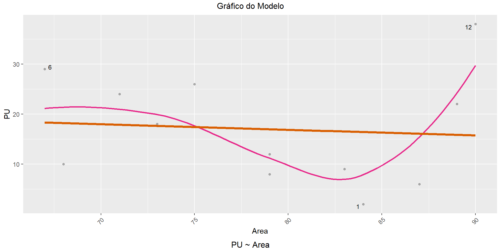
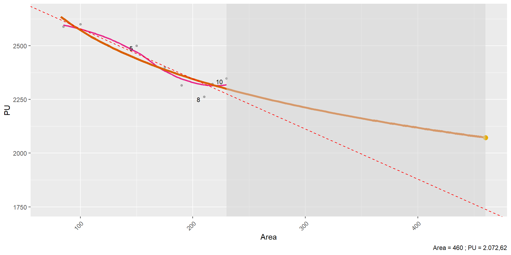

Avaliação em Massa
Regressão Linear Múltipla
Academia da Engenharia de Avaliações
27 de julho de 2025
Regressão Linear Múltipla
Regressão Linear Múltipla
- Na forma escalar, a equação de regressão linear múltipla (RLM) pode ser escrita:
- \[\mathbf y = \beta_0 + \beta_1 \pmb X_1 + \beta_2 \pmb X_2 + \ldots + \beta_k \pmb X_k + \pmb \epsilon \qquad(1)\]
- A solução da equação Equação 1 leva a valores \(\hat \beta_0, \hat \beta_1, \ldots , \hat \beta_k\) que minimizam a Soma do Quadrado dos Erros (SQE):
- \[\hat{\mathbf y} = \hat \beta_0 + \hat \beta_1 \pmb X_1 + \hat \beta_2 \pmb X_2 + \ldots + \hat \beta_k \pmb X_k\]
- A solução da equação Equação 1 leva a valores \(\hat \beta_0, \hat \beta_1, \ldots , \hat \beta_k\) que minimizam a Soma do Quadrado dos Erros (SQE):
- \[\mathbf y = \beta_0 + \beta_1 \pmb X_1 + \beta_2 \pmb X_2 + \ldots + \beta_k \pmb X_k + \pmb \epsilon \qquad(1)\]
- Na forma matricial, a equação Equação 1 pode ser reescrita:
- \[\mathbf y = \pmb{X \beta} + \pmb \epsilon \qquad(2)\]
- E a solução que minimiza SQE é (Cordeiro e Lima Neto 2004, 3):
- \[\pmb{\hat\beta}_{OLS} = (\mathbf{X^T X})^{-1}\mathbf X^T \mathbf y \qquad(3)\]
Revisão de Regressão Linear Múltipla
\[\mathbf y = \pmb{X \beta} + \pmb \epsilon \qquad(4)\]
\[ \mathbf y = \begin{Bmatrix} y_1 \\ y_2 \\ \vdots \\ y_n \end{Bmatrix} \]
\[ \mathbf X = \begin{Bmatrix} 1 & x_{11} & x_{21} & \cdots & x_{k1}\\ 1 & x_{12} & x_{22} & \cdots & x_{k2}\\ \vdots & \vdots & \vdots & \ddots & \vdots\\ 1 & x_{1n} & x_{2n} & \cdots & x_{kn}\\ \end{Bmatrix} \]
\[ \pmb{\beta} = \begin{Bmatrix} \beta_0 \\ \beta_1 \\ \vdots \\ \beta_k \end{Bmatrix}\quad \pmb{\epsilon} = \begin{Bmatrix} \epsilon_1 \\ \epsilon_2 \\ \vdots \\ \epsilon_n \end{Bmatrix} \]
Revisão de Regressão Linear Múltipla
- Geometricamente, a regressão linear é uma projeção ortogonal dos valores observados no espaço das colunas de \(\pmb X\):
Revisão de Regressão Linear Múltipla
Os resíduos são a previsão do termo de erro e são a diferença entre os valores observados e ajustados:
- \[\pmb{\hat\epsilon} = \mathbf y - \mathbf X \pmb{\hat\beta} = \mathbf y - \hat {\mathbf y} \qquad(5)\]
Os valores previstos podem ser escritos assim:
- \[\hat{\mathbf y} = \pmb{X \hat\beta}_{OLS} = \mathbf X(\mathbf{X^T X})^{-1}\mathbf X^T \mathbf y\]
- \[\hat{\mathbf y} = \mathbf{Hy}, \, \text{com } \mathbf H = \mathbf X(\mathbf{X^T X})^{-1}\mathbf X^T \qquad(6)\]
- \(H\) é conhecida como matriz chapéu ou matriz de projeção (Cordeiro e Lima Neto 2004, 6)!
Substituindo a Equação 6 na Equação 5:
- \[\pmb{\hat\epsilon} = \mathbf y - \mathbf{Hy} = (\mathbf{I} - \mathbf{H}) \mathbf y \qquad(7)\]
Matriz chapéu
\[ \mathbf H = \begin{Bmatrix} h_{11} & h_{21} & \cdots & h_{n1}\\ h_{12} & h_{22} & \cdots & h_{n2}\\ \vdots & \vdots & \ddots & \vdots\\ h_{1n} & h_{2n} & \cdots & h_{nn}\\ \end{Bmatrix} \]
- Os elementos diagonais da matriz chapéu (\(h_{ii}\)) são denominadas alavancagens dos dados!
- As alavancagens representam a contribuição de cada observação da amostra no cômputo do valor ajustado para esta mesma observação.
- Quanto mais distante uma observação estiver da
| 1 | 2 | 3 | 4 | 5 | 6 | 7 | 8 | 9 | 10 | 11 | 12 | 13 | 14 | 15 | 16 | 17 | 18 | 19 | 20 | 21 |
|---|---|---|---|---|---|---|---|---|---|---|---|---|---|---|---|---|---|---|---|---|
| 0.18 | 0.18 | 0.17 | 0.15 | 0.12 | 0.11 | 0.09 | 0.09 | 0.06 | 0.05 | 0.04 | 0.03 | 0.02 | 0.00 | -0.01 | -0.03 | -0.04 | -0.05 | -0.06 | -0.07 | -0.03 |
| 0.18 | 0.17 | 0.16 | 0.15 | 0.12 | 0.11 | 0.09 | 0.09 | 0.06 | 0.05 | 0.04 | 0.03 | 0.02 | 0.00 | -0.01 | -0.02 | -0.03 | -0.04 | -0.06 | -0.07 | -0.03 |
| 0.17 | 0.16 | 0.15 | 0.14 | 0.11 | 0.10 | 0.09 | 0.08 | 0.06 | 0.05 | 0.04 | 0.03 | 0.02 | 0.01 | -0.01 | -0.02 | -0.02 | -0.04 | -0.05 | -0.06 | -0.02 |
| 0.15 | 0.15 | 0.14 | 0.13 | 0.11 | 0.10 | 0.08 | 0.08 | 0.06 | 0.05 | 0.04 | 0.03 | 0.03 | 0.01 | 0.00 | -0.01 | -0.02 | -0.03 | -0.04 | -0.05 | -0.01 |
| 0.12 | 0.12 | 0.11 | 0.11 | 0.09 | 0.08 | 0.07 | 0.07 | 0.06 | 0.05 | 0.04 | 0.04 | 0.03 | 0.02 | 0.01 | 0.01 | 0.00 | -0.01 | -0.01 | -0.02 | 0.01 |
| 0.11 | 0.11 | 0.10 | 0.10 | 0.08 | 0.08 | 0.07 | 0.07 | 0.05 | 0.05 | 0.04 | 0.04 | 0.03 | 0.03 | 0.02 | 0.01 | 0.01 | 0.00 | 0.00 | -0.01 | 0.01 |
| 0.09 | 0.09 | 0.09 | 0.08 | 0.07 | 0.07 | 0.06 | 0.06 | 0.05 | 0.05 | 0.04 | 0.04 | 0.04 | 0.03 | 0.03 | 0.02 | 0.02 | 0.02 | 0.01 | 0.01 | 0.02 |
| 0.09 | 0.09 | 0.08 | 0.08 | 0.07 | 0.07 | 0.06 | 0.06 | 0.05 | 0.05 | 0.04 | 0.04 | 0.04 | 0.03 | 0.03 | 0.03 | 0.02 | 0.02 | 0.02 | 0.01 | 0.03 |
| 0.06 | 0.06 | 0.06 | 0.06 | 0.06 | 0.05 | 0.05 | 0.05 | 0.05 | 0.05 | 0.05 | 0.05 | 0.04 | 0.04 | 0.04 | 0.04 | 0.04 | 0.04 | 0.04 | 0.03 | 0.04 |
| 0.05 | 0.05 | 0.05 | 0.05 | 0.05 | 0.05 | 0.05 | 0.05 | 0.05 | 0.05 | 0.05 | 0.05 | 0.05 | 0.05 | 0.05 | 0.05 | 0.05 | 0.05 | 0.05 | 0.05 | 0.05 |
| 0.04 | 0.04 | 0.04 | 0.04 | 0.04 | 0.04 | 0.04 | 0.04 | 0.05 | 0.05 | 0.05 | 0.05 | 0.05 | 0.05 | 0.05 | 0.05 | 0.05 | 0.06 | 0.06 | 0.06 | 0.05 |
| 0.03 | 0.03 | 0.03 | 0.03 | 0.04 | 0.04 | 0.04 | 0.04 | 0.05 | 0.05 | 0.05 | 0.05 | 0.05 | 0.06 | 0.06 | 0.06 | 0.06 | 0.06 | 0.06 | 0.07 | 0.06 |
| 0.02 | 0.02 | 0.02 | 0.03 | 0.03 | 0.03 | 0.04 | 0.04 | 0.04 | 0.05 | 0.05 | 0.05 | 0.05 | 0.06 | 0.06 | 0.06 | 0.06 | 0.07 | 0.07 | 0.07 | 0.06 |
| 0.00 | 0.00 | 0.01 | 0.01 | 0.02 | 0.03 | 0.03 | 0.03 | 0.04 | 0.05 | 0.05 | 0.06 | 0.06 | 0.06 | 0.07 | 0.07 | 0.08 | 0.08 | 0.09 | 0.09 | 0.07 |
| -0.01 | -0.01 | -0.01 | 0.00 | 0.01 | 0.02 | 0.03 | 0.03 | 0.04 | 0.05 | 0.05 | 0.06 | 0.06 | 0.07 | 0.08 | 0.08 | 0.09 | 0.09 | 0.10 | 0.10 | 0.08 |
| -0.03 | -0.02 | -0.02 | -0.01 | 0.01 | 0.01 | 0.02 | 0.03 | 0.04 | 0.05 | 0.05 | 0.06 | 0.06 | 0.07 | 0.08 | 0.09 | 0.09 | 0.10 | 0.11 | 0.11 | 0.09 |
| -0.04 | -0.03 | -0.02 | -0.02 | 0.00 | 0.01 | 0.02 | 0.02 | 0.04 | 0.05 | 0.05 | 0.06 | 0.06 | 0.08 | 0.09 | 0.09 | 0.10 | 0.11 | 0.11 | 0.12 | 0.09 |
| -0.05 | -0.04 | -0.04 | -0.03 | -0.01 | 0.00 | 0.02 | 0.02 | 0.04 | 0.05 | 0.06 | 0.06 | 0.07 | 0.08 | 0.09 | 0.10 | 0.11 | 0.11 | 0.12 | 0.13 | 0.10 |
| -0.06 | -0.06 | -0.05 | -0.04 | -0.01 | 0.00 | 0.01 | 0.02 | 0.04 | 0.05 | 0.06 | 0.06 | 0.07 | 0.09 | 0.10 | 0.11 | 0.11 | 0.12 | 0.14 | 0.15 | 0.11 |
| -0.07 | -0.07 | -0.06 | -0.05 | -0.02 | -0.01 | 0.01 | 0.01 | 0.03 | 0.05 | 0.06 | 0.07 | 0.07 | 0.09 | 0.10 | 0.11 | 0.12 | 0.13 | 0.15 | 0.16 | 0.12 |
| -0.03 | -0.03 | -0.02 | -0.01 | 0.01 | 0.01 | 0.02 | 0.03 | 0.04 | 0.05 | 0.05 | 0.06 | 0.06 | 0.07 | 0.08 | 0.09 | 0.09 | 0.10 | 0.11 | 0.12 | 0.09 |
Relação entre erro e resíduos
- Substituindo a Equação 4 na Equação 7, temos:
- \[\pmb{\hat \epsilon} = (\mathbf{I-H})\mathbf (\mathbf{X\beta} + \pmb{\epsilon})\]
- A matriz chapéu, \(\mathbf H\), é ortogonal ao espaço vetorial das colunas de \(X\)
- Portanto, \((\mathbf{I-H})\mathbf (\mathbf{X\beta}) = 0\)
- Então:
- \[\pmb{\hat \epsilon} = (\mathbf{I-H}) \pmb{\epsilon}\]
- Assim, se \(\pmb{\epsilon} \sim \mathcal N(0, \sigma^2\mathbf I)\), então: \[\pmb{\hat\epsilon} \sim \mathcal N(0, \sigma^2(\mathbf{I-H}))\]
Transformações dos Resíduos
- É muito comum fazer:
- \[r_i = \frac{\hat\epsilon_i}{\hat\sigma} \qquad(8)\]
- Pode-se mostrar, no entanto, que os resíduos padronizados devem ser assim calculados (Cordeiro e Lima Neto 2004, 21):
- \[r_i = \frac{\hat \epsilon_i}{\hat \sigma \sqrt{1-h_{ii}}} \qquad(9)\]
- \(\hat \epsilon_i\) é o resíduo calculado pelo modelo
- \(\hat \sigma\) é o erro-padrão da regressão
- \(h_{ii}\) é o i-ésimo elemento da diagonal da matriz chapéu
- \[r_i = \frac{\hat \epsilon_i}{\hat \sigma \sqrt{1-h_{ii}}} \qquad(9)\]
- Os resíduos da Equação 8 são denominados resíduos semi-studentizados
- Os resíduos da Equação 9 são denominados de resíduos internamente studentizados, ou simplesmente resíduos padronizados!
- Os resíduos calculados conforme a Equação 9 devem apresentar distribuição normal padrão (Cordeiro e Lima Neto 2004, 21)!
Exemplo
| Area | Preco | PU |
|---|---|---|
| 75 | 200.000 | 2.666,67 |
| 85 | 220.000 | 2.588,24 |
| 100 | 260.000 | 2.600,00 |
| 125 | 312.500 | 2.500,00 |
| 150 | 375.000 | 2.500,00 |
| 175 | 420.000 | 2.400,00 |
| 190 | 440.000 | 2.315,79 |
| 210 | 475.000 | 2.261,90 |
| 225 | 550.000 | 2.444,44 |
Exemplo
Call:
lm(formula = PU ~ Area, data = dados)
Residuals:
Min 1Q Median 3Q Max
-82.08 -24.88 -18.48 28.32 132.38
Coefficients:
Estimate Std. Error t value Pr(>|t|)
(Intercept) 2790.9074 69.3490 40.244 1.52e-09 ***
Area -2.1282 0.4411 -4.824 0.00191 **
---
Signif. codes: 0 '***' 0.001 '**' 0.01 '*' 0.05 '.' 0.1 ' ' 1
Residual standard error: 68.91 on 7 degrees of freedom
Multiple R-squared: 0.7688, Adjusted R-squared: 0.7358
F-statistic: 23.27 on 1 and 7 DF, p-value: 0.001912Exemplo
- Resíduos Semi-Studentizados vs. Padronizados
Exemplo
- Modelo final
Call:
lm(formula = PU ~ Area, data = dados, subset = -9)
Residuals:
Min 1Q Median 3Q Max
-39.73 -20.18 -3.08 15.52 52.09
Coefficients:
Estimate Std. Error t value Pr(>|t|)
(Intercept) 2863.423 35.303 81.1 2.4e-10 ***
Area -2.770 0.241 -11.5 2.6e-05 ***
---
Signif. codes: 0 '***' 0.001 '**' 0.01 '*' 0.05 '.' 0.1 ' ' 1
Residual standard error: 32.1 on 6 degrees of freedom
Multiple R-squared: 0.957, Adjusted R-squared: 0.949
F-statistic: 132 on 1 and 6 DF, p-value: 0.000026Pontos Influenciantes
Pontos influenciantes
Distância de Cook
- A Estatística de Cook, ou distância de Cook, é uma medida da influência das observações, que pode ser escrita (Cordeiro e Lima Neto 2004, 23):
- \[ D_i = \frac{\sum_{j = 1}^n (\hat y_j - \hat y_{j(i)})^2}{ps^2} \qquad(10)\]
A distância de Cook \(D_i\) pode ser vista como uma medida da distância entre os coeficientes calculados com e sem a i-ésima observação (Cordeiro e Lima Neto 2004, 24).
- Felizmente, na prática,não é necessário o cômputo de \(n\) modelos de regressão com LOOCV, pois a Equação 10 pode ser assim reescrita (Cordeiro e Lima Neto 2004, 24):
- \[D_i = \frac{h_{ii}}{p(1-h_{ii})}r_i^2 \qquad(11)\]
Distância de Cook
- Um dos problemas com a distância de Cook é a falta de um critério preciso para a definição da máxima distância de Cook aceitável
- Alguns autores recomendam que a \(D_i < 1,0\);
- Outros recomendam a utilização do seguinte critério:
- \(D_i < 4/n\)
- Ainda, há outro critério:
- \(D_i < 4/(n-k-1)\)
Distância de Cook
- É comum encontrar o critério \(D_i \geq 1,0\) para identificar pontos influenciantes!
- Para poucos dados, o critério acima não se aplica razoavelmente!
Distância de Cook
As observações serão consideradas influentes quando \(D_i \geq F_{p,\,n-p}(0,50)\) (Cordeiro e Lima Neto 2004, 24).
- Exemplo:
Distância de Cook
- Exemplo:
1 2 3 4 5 6 7 8 9
0.09775 0.02621 0.01662 0.01159 0.01189 0.00682 0.14372 0.35250 1.54696 - \(D_i < 0,7665\)
Análise Gráfica de Resíduos
Análise Gráfica de Resíduos
Figura 3: Análise de Resíduos do Exemplo 1.
Análise Gráfica de Resíduos
Viés
Viés
- Existem diversos tipos de viés na análise estatística.
- Um tipo de viés é o viés amostral, que tem origem na coleta de amostras de maneiras não-aleatórias
- Exemplo: coletar dados de terrenos apenas de uma fonte de informações.
- Um tipo de viés é o viés amostral, que tem origem na coleta de amostras de maneiras não-aleatórias
- Outros vieses importantes na engenharia de avaliações são:
- Viés do patrocinador: a depender de quem patrocina a avaliação (comprador ou vendedor), os resultados podem ser diferentes.
- Viés da variável omitida: ocorre quando uma variável importante não é incluída no modelo estatístico.
- Exemplo: a partir de uma amostra com lotes em situação de esquina e meio-de-quadra, ajustar um modelo apenas com as características físicas dos lotes, ignorando a sua situação em relação à quadra.
Viés
Somente se pode combater o viés amostral através de uma amostragem mais cuidadosa.
O viés do patrocinador pode ser contornado através da solicitação de avaliações por partes não comprometidas com o interesse da transação.
O viés da variável omitida, no entanto, é mais complicado:
- Muitas são as variáveis que influem no valor de mercado
- Nem sempre é possível considerá-las todas ao mesmo tempo
With four parameters I can fit an elephant, and with five I can make him wiggle his trunk (Von Neumann)
Qualidade de ajuste de um modelo
- O que é um bom modelo de avaliação?
- A ABNT (2011) enfatiza, em locais diversos, a importância de explicar o mercado
- No entanto, nem sempre um modelo que explica bem o funcionamento do mercado será um bom modelo para prever novos valores de mercado
- Existe um tradeoff entre viés e variância
- O melhor modelo de avaliação é aquele que prevê valores com precisão fora da amostra!
Tradeoff entre viés e variância

Figura 4: Tradeoff entre viés e variância.
Tradeoff entre viés e variância
Partindo do modelo nulo, à medida que variáveis vão sendo acrescentadas, há uma gradual diminuição do viés.
Existe, porém, um limite para a inserção de novas variáveis.
Muitas vezes, com poucos dados, um modelo com menos variáveis será mais preciso, em termos de predição, do que um modelo mais sofisticado.
É recomendável a utilização de \(n/20\) a \(n/10\) variáveis explicativas no modelo de regressão, para evitar sobreajustamento (Harrell 2015, 72).
Sobreajustamento
Sobreajustamento

Figura 5: Ilustração do sobreajustamento de um modelo.
Sobreajustamento
É comum na engenharia de avaliações a consideração de diversas variáveis, mesmo com poucos dados
Muitas vezes isso leva a modelos com alto grau de ajuste (alto \(R^2\))
- Para isto, porém, costuma ser necessária a exclusão de alguns dados e a aplicação de transformações as mais diversas às variáveis do modelo.
Um modelo sobreajustado irá prever valores para novos dados que não necessariamente irão refletir os preços de mercado.
Como, então, aferir se o modelo de regressão prevê bem valores fora da amostra?
Qualidade de ajuste
Qualidade de ajuste de um modelo
- É comum a utilização da estatística \(R^2\) de um modelo:
- \[R^2 = 1 - \frac{SQR}{SQT} \qquad(12)\]
- \(SQR\) é a Soma do Quadrado dos Resíduos (\(\sum(y_i - \hat y_i)^2\))
- \(SQT\) é a Soma dos Quadrados Totais (\(\sum(y_i - \bar y)^2\))
- \[R^2 = 1 - \frac{SQR}{SQT} \qquad(12)\]
- \(R^2\) não é nada mais que uma estimativa para \(\rho^2\) (Karch 2020, 2):
- \[\rho^2 = 1 - \frac{\sigma_\epsilon^2}{\sigma_Y^2} \qquad(13)\]
- \(\sigma_\epsilon^2\) é a variância dos erros
- \(\sigma_Y^2\) é a variância total
- Se adotamos \(\hat \sigma_\epsilon^2 = SQR/n\) e \(\hat \sigma_Y^2 = SQT/n\), obtemos a Equação 12.
Qualidade de ajuste de um modelo
Se adotamos as versões não-viesadas das variâncias, obtemos a Equação 14:
- \(\hat \sigma_\epsilon^2 = SQR/\text{df}_{\text{res}} = SQR/(n-p-1);\;\hat \sigma_Y^2 = SQT/\text{df}_{\text{tot}} = SQT/(n-1)\)
- \[R^2_{ajust} = 1 - \frac{SQR/\text{df}_{\text{res}}}{SQT/\text{df}_{\text{tot}}}= 1 - \frac{(n-1)SQR}{(n-p-1)SQT} \qquad(14)\]
- \(\hat \sigma_\epsilon^2 = SQR/\text{df}_{\text{res}} = SQR/(n-p-1);\;\hat \sigma_Y^2 = SQT/\text{df}_{\text{tot}} = SQT/(n-1)\)
Mesmo assim, \(R^2_{ajust}\) ainda não é um estimador não-viesado de \(\rho^2\) (Karch 2020, 2)
\(R^2_{ajust}\) penaliza a inserção de novas variáveis no modelo.
- Essa penalidade, porém, nem sempre é relevante:
- Se \(n = 10\), e \(p = 1\rightarrow (n-1)/(n-p-1) = 1,125\)
- Se \(n = 10\), e \(p = 2\rightarrow (n-1)/(n-p-1) = 1,286\)
- Se \(n = 100\) e \(p = 6\rightarrow (n-1)/(n-p-1) = 1,065\)
- Se \(n = 100\) e \(p = 7\rightarrow (n-1)/(n-p-1) = 1,076\)
- Essa penalidade, porém, nem sempre é relevante:
Seleção de modelos
- O melhor modelo de regressão nem sempre será aquele com maior \(R^2\) ou \(R^2_{ajust}\)
Alguns pesquisadores se baseiam erroneamente apenas no valor de \(R^2\) para escolher o melhor modelo. Entretanto, tão importante quanto termos um \(R^2\) próximo de um, é que a estimativa de \(\sigma^2\) seja também pequena, pois os intervalos de confiança para os parâmetros de interesse são proporcionais a \(\sigma\) (Cordeiro e Lima Neto 2004, 12).
- O melhor ajuste dos dados da amostra a um modelo não significa que o modelo irá prever valores com precisão fora da amostra
- Não estamos interessados no modelo de regressão que melhor explica a amostra, mas no modelo de regressão que melhor prevê os valores dos imóveis fora da amostra.
Validação Cruzada
Em alguns casos, é possível particionar os dados e ajustar o modelo de regressão com uma das partições, e calcular o \(R^2\) em outra partição dos dados
Porém, na engenharia de avaliações é frequente que trabalhemos com conjuntos de dados pequenos, o que nos dificulta muito, senão impossibilita, de particionar os dados.
Uma alternativa, nestes casos de pequenos conjuntos de dados, é a utilização da técnica de reamostragem jackknife!
Reamostragem
Reamostragem jackknife
O Método jackknife, de Quenouille-Tukey, é um método de reamostragem não-paramétrico.
O método jackknife consiste em reamostrar uma amostra \(n\) vezes, deixando de fora um dos seus dado de cada vez.
- O método jackknife também pode ser denominado de leave-one-out cross-validation (LOOCV)
Exemplo 2
- Em uma amostra com 10 elementos, quais sejam:
Exemplo 2
| Area | 75 | 85 | 100 | 125 | 150 | 175 | 190 | 210 | 218 | 230 |
| Preco | 200.000 | 220.000 | 260.000 | 312.500 | 375.000 | 420.000 | 440.000 | 475.000 | 505.000 | 540.000 |
| PU | 2.667 | 2.588 | 2.600 | 2.500 | 2.500 | 2.400 | 2.316 | 2.262 | 2.322 | 2.348 |
- Investigar se há algum outlier pelo critério do resíduo-padrão (\(|r_i|<2\))
As observações cujos valores absolutos dos resíduos padronizados são maiores do que 2 podem ser consideradas mal-ajustadas (pontos aberrantes) (Cordeiro e Lima Neto 2004, 21).
Exemplo 2
Call:
lm(formula = PU ~ Area, data = dados)
Residuals:
Min 1Q Median 3Q Max
-61.61 -25.94 5.29 25.77 71.02
Coefficients:
Estimate Std. Error t value Pr(>|t|)
(Intercept) 2814.000 42.713 65.88 3.1e-12 ***
Area -2.336 0.259 -9.02 1.8e-05 ***
---
Signif. codes: 0 '***' 0.001 '**' 0.01 '*' 0.05 '.' 0.1 ' ' 1
Residual standard error: 44.4 on 8 degrees of freedom
Multiple R-squared: 0.91, Adjusted R-squared: 0.899
F-statistic: 81.3 on 1 and 8 DF, p-value: 0.0000183Exemplo 2
- Resíduos padronizados:
1 2 3 4 5 6 7 8 9 10
0.7608 -0.7176 0.4941 -0.5327 0.8629 -0.1258 -1.3213 -1.5506 0.4062 1.8937 Não há dados com resíduo-padrão com magnitude igual ou maior a 2,0 em módulo!
Porém, e se o problema for que os pontos aberrantes são também influenciantes?
- Então, devido à influência do próprio ponto, o seu resíduo padronizado é esperado que seja baixo!
1 2 3 4 5 6 7 8 9 10
0.1372 0.0953 0.0316 0.0216 0.0419 0.0010 0.1420 0.3006 0.0246 0.7230 Exemplo 2
E se aplicarmos a reamostragem jackknife e elaborarmos 10 modelos de regressão, retirando-se um ponto de cada vez, calculando o resíduo-padrão?
Resíduos jackknife:
- Os resíduos assim computados também são conhecidos como resíduos (externamente) studentizados.
Exemplo 2
Exemplo 2
Exemplo 2
Exemplo 2
Call:
lm(formula = PU ~ Area, data = dados)
Residuals:
Min 1Q Median 3Q Max
-61.61 -25.94 5.29 25.77 71.02
Coefficients:
Estimate Std. Error t value Pr(>|t|)
(Intercept) 2814.000 42.713 65.88 3.1e-12 ***
Area -2.336 0.259 -9.02 1.8e-05 ***
---
Signif. codes: 0 '***' 0.001 '**' 0.01 '*' 0.05 '.' 0.1 ' ' 1
Residual standard error: 44.4 on 8 degrees of freedom
Multiple R-squared: 0.91, Adjusted R-squared: 0.899
F-statistic: 81.3 on 1 and 8 DF, p-value: 0.0000183
Call:
lm(formula = PU ~ Area, data = dados, subset = -10)
Residuals:
Min 1Q Median 3Q Max
-38.01 -35.06 9.54 17.50 44.86
Coefficients:
Estimate Std. Error t value Pr(>|t|)
(Intercept) 2843.200 36.060 78.8 1.4e-11 ***
Area -2.587 0.231 -11.2 1.0e-05 ***
---
Signif. codes: 0 '***' 0.001 '**' 0.01 '*' 0.05 '.' 0.1 ' ' 1
Residual standard error: 35.3 on 7 degrees of freedom
Multiple R-squared: 0.947, Adjusted R-squared: 0.94
F-statistic: 125 on 1 and 7 DF, p-value: 0.0000101Resíduos jackknife
Os resíduos jackknife podem ser calculados conforme a equação abaixo (Cordeiro e Lima Neto 2004, 22):
- \[t_i = \frac{\hat \epsilon_i}{\hat \sigma_{(i)} \sqrt{1-h_{ii}}}\]
- \(\hat \sigma_{(i)}\) é o erro-padrão da regressão calculado para cada subamostra
- \[t_i = \frac{\hat \epsilon_i}{\hat \sigma_{(i)} \sqrt{1-h_{ii}}}\]
Na prática:
- \[t_i = \sqrt{\frac{n-p-1}{n-p-r_i^2}}r_i\]
Os resíduos jackknife ou resíduos externamente studentizados devem possuir distribuição t de Student com \(n-p-1\) graus de liberdade (Cordeiro e Lima Neto 2004, 22)!
Ver planilha excel do material de apoio!
\(R^2\) preditivo
\(R^2\) preditivo
Analogamente ao que ocorre com os resíduos studentizados e com a distância de Cook, é possível aplicar o procedimento jackknife ao cálculo de \(R^2\).
Ao \(R^2\) calculado com o método da reamostragem jackknife é dado o nome \(R^2_{pred}\):
- o resíduo de cada uma das observações é calculado com um modelo ajustado sem a contribuição desta observação para a qual o resíduo é calculado.
- Então é computada a estatística PRESS, a Soma do Quadrado dos Resíduos calculados com a reamostragem jackknife.
Na prática, não é preciso ajustar \(n\) modelos para calcular cada resíduo, pois é possível utilizar a matriz chapéu para retirar a contribuição da observação:
- \[R^2_{pred} = 1 - \frac{PRESS}{SQT} \qquad(15)\]
- \(\text{PRESS} = \sum(\hat \epsilon_i/(1-h_{ii}))^2\)
- \[R^2_{pred} = 1 - \frac{PRESS}{SQT} \qquad(15)\]
Exemplo 3
Figura 8: Modelo sem significância.
Exemplo 3 (cont.)
| Termo | Est. | Erro | t | p valor |
|---|---|---|---|---|
| (Intercept) | 25,81 | 33,91 | 0,76 | 0,46 |
| Area | -0,11 | 0,43 | -0,26 | 0,80 |
| Note: | ||||
| Erro-padrão dos resíduos: 11,39 em 10 graus de liberdade. | ||||
| a MADn: 12,02 | ||||
| b R2: 0,0068 | ||||
| c R2ajust: -0,093 | ||||
| d R2pred: -0,59 | ||||
| e MAPE: 115,98% |
Exemplo 3 (cont.)
Figura 9: Modelo sobreajustado.
Exemplo 3 (cont.)
| Termo | Est. | Erro | t | p valor |
|---|---|---|---|---|
| (Intercept) | 17,00 | 2,14 | 7,95 | 0,00 |
| poly(Area, 3)1 | -2,97 | 7,41 | -0,40 | 0,70 |
| poly(Area, 3)2 | 19,41 | 7,41 | 2,62 | 0,03 |
| poly(Area, 3)3 | 21,94 | 7,41 | 2,96 | 0,02 |
| Note: | ||||
| Erro-padrão dos resíduos: 7,41 em 8 graus de liberdade. | ||||
| a MADn: 6,92 | ||||
| b R2: 0,66 | ||||
| c R2ajust: 0,54 | ||||
| d R2pred: -0,22 | ||||
| e MAPE: 48,04% |
- Com muitos preditores, \(R^2\) (e também \(R^2_{ajustado}\)) aumenta! Porém \(R^2_{pred}\) não!
Exemplo 2
- Voltando ao exemplo 2, utilizado para demonstrar os resíduos studentizados
Exemplo 2
1 2 3 4 5 6 7 8
-0.000326 -1.031962 0.684641 0.014561 1.610842 0.251385 -1.193145 -2.054892
9 10
0.094544 1.339744 - Maior resíduo studentizado (em módulo) agora é o ponto 8!
Exemplo 2
Exemplo 2
| Termo | Est. | Erro | t | p valor |
|---|---|---|---|---|
| (Intercept) | 2.814,00 | 42,71 | 65,88 | 0 |
| Area | -2,34 | 0,26 | -9,02 | 0 |
| Note: | ||||
| Erro-padrão dos resíduos: 44,43 em 8 graus de liberdade. | ||||
| a MADn: 43,29 | ||||
| b R2: 0,91 | ||||
| c R2ajust: 0,90 | ||||
| d R2pred: 0,85 | ||||
| e MAPE: 1,42% |
| Termo | Est. | Erro | t | p valor |
|---|---|---|---|---|
| (Intercept) | 4.081 | 176,2 | 23,16 | 0 |
| log(Area) | -328 | 35,3 | -9,28 | 0 |
| Note: | ||||
| Erro-padrão dos resíduos: 43,27 em 8 graus de liberdade. | ||||
| a MADn: 48,18 | ||||
| b R2: 0,92 | ||||
| c R2ajust: 0,90 | ||||
| d R2pred: 0,87 | ||||
| e MAPE: 1,26% |
Modelo transformado

Extrapolação
- A ABNT (2011) permite a extrapolação de variáveis explicativas em até 100% acima do limite superior:
Extrapolação
As agruras do avaliador
- Não há certeza sobre a forma funcional!
- Com poucos dados, encontrar a forma funcional “correta” é mais difícil, senão impossível!
- Com uma forma funcional, um ponto pode ser um outlier, mas não em outra forma!
- Com muitas variáveis, o problema ainda aumenta, pois mais formas funcionais são possíveis!
- Como comparar modelos com formas funcionais diferentes? Em termos de \(R^2\)?
- Ainda pode haver interações entre as variáveis!
- O que fazer?
Comparação de modelos
Call:
bestfit(formula = PU ~ Area, data = dados)
Best 10 fits:
id PU Area R2 adj_R2 pred_R2 LL AIC AICc BIC
2 2 identity log 0.915 0.904 0.872 -50.75 107.5 111.5 108.4
5 5 identity sqrt 0.918 0.907 0.870 -50.59 107.2 111.2 108.1
12 12 sqrt log 0.912 0.900 0.867 -4.98 16.0 20.0 16.9
15 15 sqrt sqrt 0.915 0.904 0.867 -4.78 15.6 19.6 16.5
10 10 log sqrt 0.912 0.901 0.863 27.16 -48.3 -44.3 -47.4
7 7 log log 0.908 0.896 0.862 26.91 -47.8 -43.8 -46.9
4 4 identity rsqrt 0.903 0.890 0.856 -51.43 108.9 112.9 109.8
1 1 identity identity 0.910 0.899 0.851 -51.01 108.0 112.0 108.9
14 14 sqrt rsqrt 0.898 0.885 0.850 -5.68 17.4 21.4 18.3
11 11 sqrt identity 0.909 0.897 0.849 -5.13 16.3 20.3 17.2
...CUIDADO: quando a variável dependente é transformada, \(R^2\) (assim como \(R^2_{ajust}\) e \(R^2_{pred}\)) valem para a escala transformada!
O que importa, no entanto, é como o modelo funciona na escala original (preços)!
Comparação de modelos
Bestfits:
id PU Area R2 adj_R2 pred_R2 nl_R2 LL AIC AICc adj_AIC
1 5 identity sqrt 0.918 0.907 0.870 0.918 -50.59 107.2 111.2 107
3 15 sqrt sqrt 0.915 0.904 0.867 0.918 -4.78 15.6 19.6 107
2 10 log sqrt 0.912 0.901 0.863 0.918 27.16 -48.3 -44.3 108
adj_AICc
1 111
3 111
2 112- Modelos são muito parecidos na escala original.
Referências

VALORÍSTICA